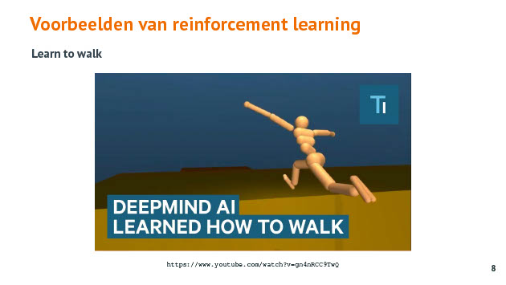
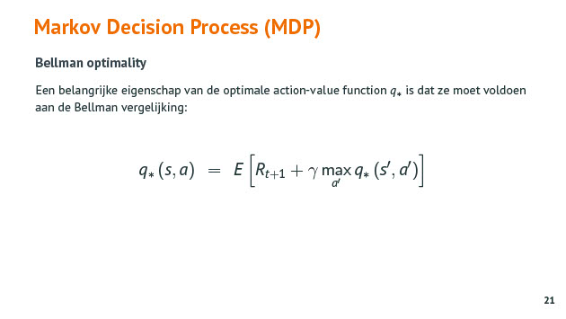

Introductie Reinforcement learning
Tags: AI MDP Qlearning reinforcementlearning
Date: 2021-05-24
Type: Cursus topic
Situering
Q: Welke leeralgoritmes heb je bij ML ?
A: Leeralgoritmes bij ML :
- supervised :
- input pmet gewneste output zijn gegeven
- task driven
- unsupervised
- de gewenste output is niet gegeven
- data driven (clustering)
- reinforcement
- leren van de beste strategie om bepaalde acties uit te voeren in omgeving
- het leren gebeurt via beloning (rewards)
Q: Welke termen heb je bij reinforcement learning ?
A: je hebt :
- Agent
- Environment
- Actions
- State & Reward

Markov Decision Process (MDP)
Q: Wat is een MDP ?
A: Een Markov Decision Process is een model dazt ons moet helpen om beslissingen te maken binnen een stochastische omgeving. Het doel is om een strategy (policy) te vinden die ons voor elke toestand van de omgeving de beste actie oplevert.
Q:Wat is de reward bij MDP ?
A: De reward is een functie van de toestand en de actie die je neemt op een bepâald tijdstip.
Q: Wat zijn transitiekansen bij MDP ?
A: Afhankelijk van de voorafgaande state worden met een zekere kans waarden toegekend aan reward en kom je in een state terecht.
Q: Wat is de discount factor bij reinforcement learning ?
A: De discount factor gamma is een waarde tss 0 en 1 die aangeeft hoe veel belang de agent moet geven aan de mogelijk toekomstige reward.
Q: Wat is een MDP policy bij reinforcement learning ?
A: De policy beschrijft met welke kans een bepaalde actie moet genomen worden in een bepaalde state. Het is de bedoelking dat de agent deze policy volgt.
Q: Wat is state value function bij MDP ?
A: De state-value function voor een policy zegt hoe goed die bepaalde state is voor een agent die de policy volgt.
Q: Wat is action-value function bij MDP ?
A: De action-value function voor een bepaalde policy zegt hoe goed het is voor een agent om bij een bepaalde policy vanit een bepaalde state een bepaalde actie te nemen. De action-value van een bepaalde actie in een bepaalde state bij een bepaalde policy zegt hoe groot de reward is om vanuit die state op een bepaalde tijdstip een bepaalde actie te nemen en daarna een bepaalde policy verder te volgen.

Q-learning
Q: Wat is Q-learning en waar wordt het gebruikt bij reinforcement learning ?
A: Het doel van Q-learning is om een policy te leren die de agent bij elke state zegt wat hij moet doen om zijn totale reward te maximaliseren. Op een iterative manier gaan we op zoek naar de action-value functie door state > action > reward > next state te doorlopen. Q-learning convergeert naar optimale Q-values als alle states regelmatig bezocht/doorlopen worden.


Q: Wat is het beste pad dat de agent kan bewandelen volgens deze Q-table ? en waarom ?
]
A: Het beste pad is van de start naar rechts te gaan en dan van lege cel 5 terug naar rechts. Dit is het beste pad omdat de totale (toekomstige) reward van de stap rechts (52.4) en (89.1) de grootste zijn van alle mogelijk acties vanuit de current state (= cel waar robot staat) naar de nieuwe state.

Q: Wat is exploratie vs exploitatie bij reinforcement learning ? Hoe wordt dit gebruikt bij training ?
A: exploratie laat de agent willekeurig acties nemen zodat deze de verschillende states kan verkennen. exploitatie laat de agent vooral de states bezoeken die de hoogste (toekomstige) reward opleveren.
Start met een hoge mate van exploratie en ga tijdens training meer en meer over naar exploitatie.